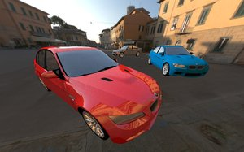
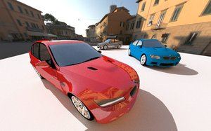
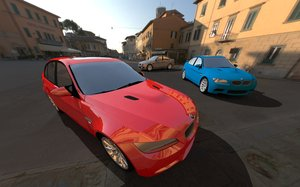

- Generated by
 1.9.7
1.9.7
|
LightsprintSDK 2021.08.08
|
Pathtracing technique is designed to work with any data, without limitations imposed by other techniques.
Our current implementation is experimental, not yet ready for production. In many cases results are too noisy and the noise does not disappear, even if you wait for very long time.
Sometimes Fireball and pathtracer produce very different results, so switching between them looks strange. It is usually because of unrealistic materials, Fireball tries to render materials as they are, while pathtracer renders only physically possible parts of materials. But other sources of differences are possible. In some cases, quality of Fireball lighting is simply too bad.

no shadows? |

add white plane |

check Material / transparency / background |
This is currently supported only by pathtracer, other techniques render "background" material fully visible.
Checkbox "Shortcut" in SceneViewer lets pathtracer reuse illumination already calculated by Fireball or Architect solver.
This greatly reduces noise in first seconds, but it makes convergence to proper results slower, so it harms long renders.
It is recommended to use Shortcut only with Fireball or Architect solver. If you switch to other technique and manipulate scene, Shorcut can produce wrong results because it accesses outdated data in Fireball/Architect solvers.